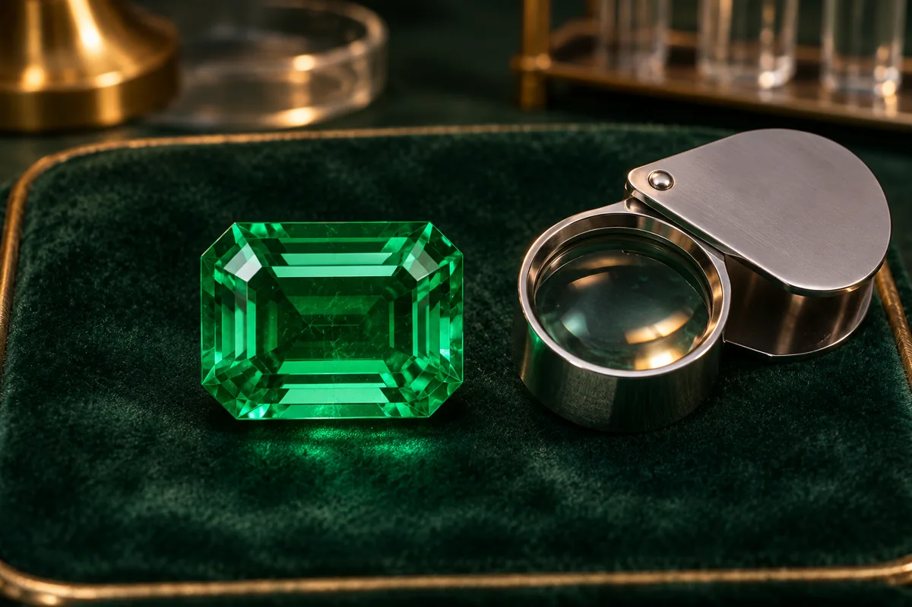

01
Profundizar conocimientos
Ampliar los contenidos abordados durante los módulos principales.
Recursos complementarios diseñados para ampliar, reforzar y profundizar los conocimientos adquiridos durante el Curso de Gemología.
Registro personal de lectura en este navegador; no equivale a una calificación ni se sincroniza con Classroom.

El Módulo 08 reúne materiales y recursos complementarios destinados a fortalecer los conocimientos adquiridos durante el Curso de Gemología.
Estos recursos pueden ser utilizados como material de consulta, profundización o apoyo para continuar desarrollando competencias relacionadas con el análisis y reconocimiento de materiales gemológicos.
El estudiante podrá consultar los recursos disponibles de acuerdo con sus intereses y necesidades de aprendizaje.
Estos recursos forman parte de los beneficios complementarios asociados al curso y permiten continuar el proceso de aprendizaje después de completar los módulos principales.
Ampliar los contenidos abordados durante los módulos principales.
Disponer de materiales adicionales para repasar conceptos gemológicos.
Contar con una biblioteca organizada para futuras consultas.
Promover el aprendizaje autónomo después de finalizar el curso.
Los siguientes espacios pueden utilizarse para organizar los diferentes recursos adicionales incluidos en el curso.
Material complementario para repasar conceptos y procedimientos estudiados durante el curso.
Ver recurso →Recurso de consulta rápida sobre diferentes materiales y características gemológicas.
Ver recurso →Material de apoyo para reforzar procesos de observación e identificación.
Ver recurso →Contenido adicional para estudiantes interesados en ampliar su formación.
Ver recurso →Documento de consulta adicional para reforzar los conceptos del curso.
Material de consulta rápida para comparar características de diferentes gemas.
Recurso de consulta para términos técnicos utilizados durante el curso.
Espacio destinado a incorporar videos complementarios relacionados con los temas desarrollados durante el curso.
Consultar actividades en Classroom ↗Acceso a la carpeta donde se encuentran disponibles los materiales complementarios incluidos en el curso.
Los recursos deben configurarse con permisos adecuados para evitar que usuarios no autorizados puedan modificar el contenido.
El estudiante realizará un repaso general de los contenidos desarrollados durante el curso, relacionando conceptos de identificación, propiedades, instrumentos, clasificación, valoración y esmeraldas colombianas.
Consultar actividades en Classroom ↗El estudiante ha llegado al último módulo del Curso de Gemología. Después de revisar los recursos adicionales, podrá completar el proceso de formación y consultar nuevamente los materiales cuando lo necesite.
Una vez revisados los recursos adicionales, el estudiante podrá marcar el último módulo como completado.